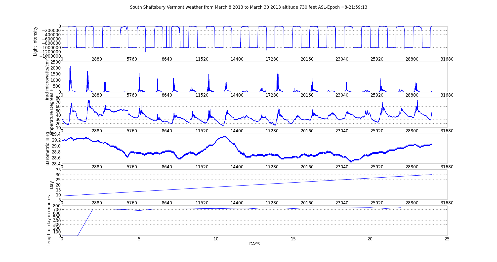

<!DOCTYPE HTML PUBLIC "-//W3C//DTD HTML 4.01 Frameset//EN" "http://www.w3.org/TR/html4/frameset.dtd">
<body
<div style="text-align: center"><b><h1>Woodys Weather World</h1></b></div>
<div style="text-align: center"></div>
<br />
<div style="text-align: center"><a href="logger.html" target="logger.html" name="logger.html" title="logger.html">logger.csv</a></div>
<br />
<div style="text-align: center"><a href="lastline.txt" title="Temp">lastline.txt</a></div>
<br />
<div style="text-align: center"><a href="baroline.txt" title="Temp">baroline.txt</a></div>
<br />
<div style="text-align: center"><a href="lightline.txt" title="Temp">lightline.txt</a></div>
<br />
<div style="text-align: center"><a href="https://api.cosm.com/v2/feeds/119571/datastreams/119571.png?width=730&height=250&colour=%23f15a24&duration=1week&legend=Degrees%20F&title=Temperature%20in%20Shaftsbury%20Vermont&show_axis_labels=true&detailed_grid=true&scale=auto">Temperature Graph</a></div>
<br />
<div style="text-align: center"><a href="https://api.cosm.com/v2/feeds/120008/datastreams/120008.png?width=730&height=250&colour=%23f15a24&duration=1week&legend=In%2FHG&title=Barometric%20Pressure%20in%20Shaftsbury%20Vermont&show_axis_labels=true&detailed_grid=true&scale=auto">Barometric Pressure</a></div>
<br />
<div style="text-align: center"><a href="https://api.cosm.com/v2/feeds/121353/datastreams/1.png?width=730&height=250&colour=%23f15a24&duration=1week&legend=Solar%20energy&title=Irradiance%20uw%2Fcm%5E2&show_axis_labels=true&detailed_grid=true&scale=auto&timezone=Eastern%20Time%20(US%20%26%20Canada)">Irradiance Graph</a></div>
<div style="text-align: center"><a href="test.png" title="Temp">Webcam</a></div>


<iframe src="http://www.ndbc.noaa.gov/widgets/station_page.php?station=44037" style="border: solid thin #3366ff; width:300px; height:300px"></iframe>


<div style="text-align: center"><span style="display: block !important; width: 320px; text-align: center; font-family: sans-serif; font-size: 12px;"><a href="http://www.wunderground.com/cgi-bin/findweather/getForecast?query=zmw:05262.1.99999&bannertypeclick=wu_clean2day" title="Shaftsbury, Vermont Weather Forecast" target="_blank"></a><br><a href="http://www.wunderground.com/cgi-bin/findweather/getForecast?query=zmw:05262.1.99999&bannertypeclick=wu_clean2day" title="Get latest Weather Forecast updates" style="font-family: sans-serif; font-size: 12px" target="_blank">Click for weather forecast</a></span></div>


